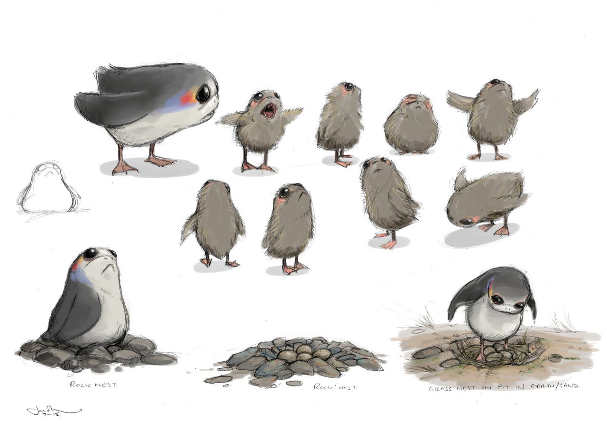

# load packages
library(readr)
library(dplyr)
library(ggplot2)Start by reading in the Porg data.
porg_data <- read_csv("https://itep-r.netlify.com/data/Porg_samples.csv")Take a couple of minutes to get an overview of the data. Do you remember some of the functions to do that?
Show solution
view(porg_data)
glimpse(porg_data)
summary(porg_data)
What columns are there? What kinds of questions do you have about the data after looking at it. (Hint, I see some biomonotoring concentrations and some response times. Maybe Corundum is neurotoxic to porgs? Ask Dorian to find out for sure.)
Now create a scatterplot showing the relationship between conncetration and rxn_time.
Show solution
ggplot(data = porg_data, aes(x = Concentration, y = rxn_time)) +
geom_point()
What type of cleaning does this data set need? Let’s take a look at the lowest and highest concentration levels and see if anything looks odd.
Show solution
porg_data <- arrange(porg_data, Concentration)
porg_data <- arrange(porg_data, desc(Concentration))Hmmm. Looks like there’s some negative numbers. Is that possible for Corundum measurements? We ask our team of Bot measurement analysts and they say NO! So, let’s filter out the negative concentration values.
Show solution
porg_data <- filter(porg_data, Concentration > 0)Let’s look at the data set again. I see a units column. Are all the units the same? Looks like the Concentration units are in both ppb and ppm. Let’s add a column with consistent concentration units, and convert the ppm concentrations into ppb.
Show solution
porg_data <- mutate(porg_data, conc_ppb = ifelse(Conc_units == "ppm", Concentration * 1000, Concentration))Remember the rule of plotting data? Hint: Plot the data, Plot the data, Plot the data
So, let’s re-plot the data
Show solution
ggplot(data = porg_data, aes(x = conc_ppb, y = rxn_time)) +
geom_point()
Let’s calculate the mean concentration by island to determine if there might be Corundum concentration differences by island. Do you remeber which function to use here?
Show solution
porg_island_summary <- group_by(porg_data, Island) %>%
summarise(mean_corundum = mean(conc_ppb))Maybe making a box plot would help answer this question more clearly?
Show solution
ggplot(data = porg_data, aes(x = Island, y = conc_ppb)) +
geom_boxplot()
Let’s fill the boxplot with a different color for each island to make it look better.
Show solution
ggplot(data = porg_data, aes(x = Island, y = conc_ppb, fill = Island)) +
geom_boxplot()
Let’s make an individual scatterplot for each island by splitting the Islands into multiple “facets”.
Remember which function to use?
Show solution
ggplot(data = porg_data, aes(x = conc_ppb, y = rxn_time)) +
geom_point() +
facet_wrap("Island")
Try an x-y scatter plot of conc_ppb and rxn_time and experiment with
geom_smooth(method = "loess")
Show solution
ggplot(data = porg_data, aes(x = conc_ppb, y = rxn_time)) +
geom_point() +
geom_smooth(method = "loess") +
facet_wrap(~Island)## `geom_smooth()` using formula 'y ~ x'
Nice work Jedi Master! You are ready to tackle your own data set, maps, images, statistics, the universe!